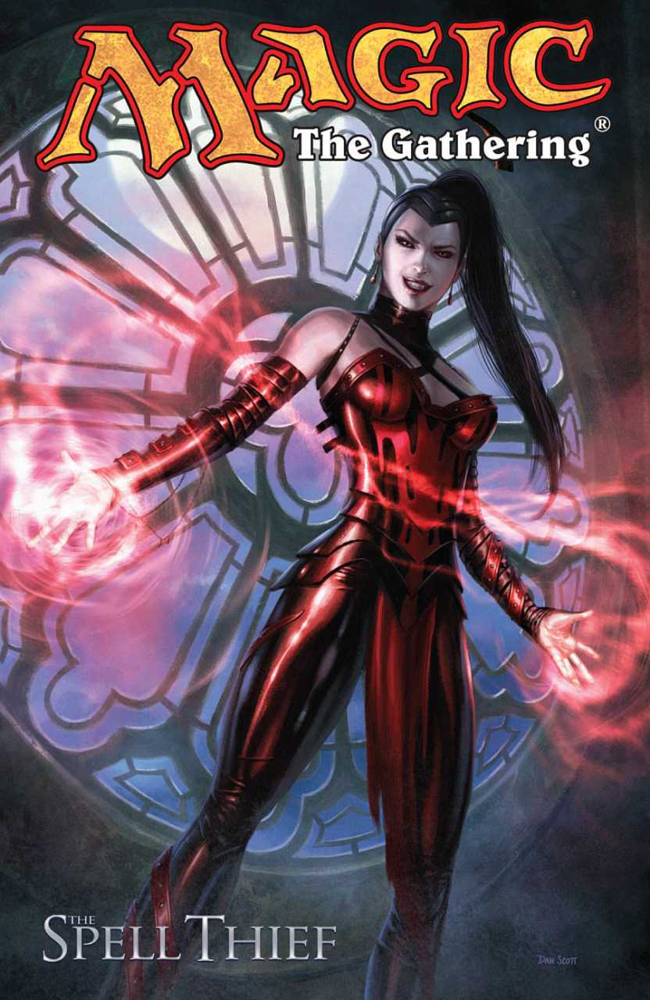
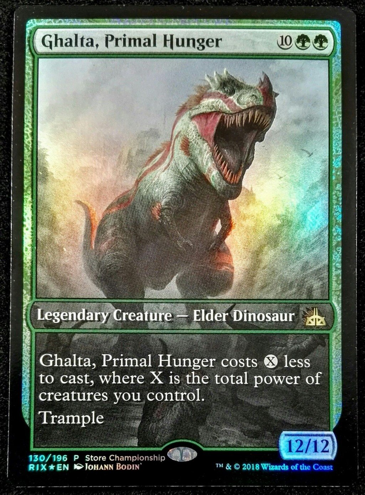
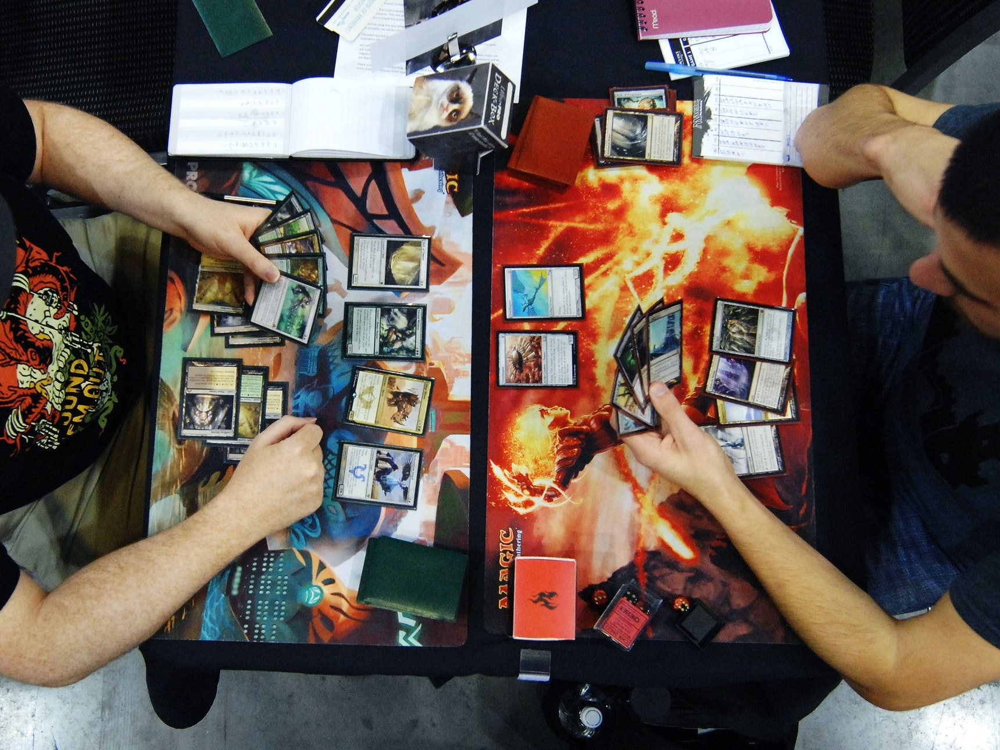

The fantasy theme of Magic the Gathering provides context for its mechanics and helps to make the game a compelling, interesting experience. In Magic, cards have both functional and aesthetic components. The functional components include the card’s type, description, and mana cost. These are the most significant in determining actual gameplay. Cards’ names and artwork initially seem to exist just to please the eye, but I believe they are essential to Magic’s playstyle, and key to its success. Names and creature types also provide in-world logic for why certain cards have specific abilities. For example, instead of having “unblockable” cards, Magic has “flying” cards, typically featuring creatures that could fly (angels, birds, etc.). It’s easy to understand why a knight would be unable to stop a dragon flying overhead. Another example of in-world logic can be seen in the “Spiritual Guardian” creature, which, naturally, heals the user.

Magic has a fantasy setting, where players are wizards capable of casting magical spells, who also command small armies of creatures. This setting provides a basis for many of Magic’s core mechanics, making the game easier to understand. For instance, you have a limit on the number of spells you can cast, because you need to consume mana for each spell. This is pretty intuitive to anyone familiar with fantasy settings. Commanding an army of creatures is also a simple concept to grasp, and players can readily visualize their game as a battle.
Unique flavor and aesthetics also create a more visually appealing experience and gives additional incentive to buying packs. Not only can you find useful cards for your decks, you may also come across some brilliant pieces of art! Also key to marketing is the prominent “Magic the Gathering” logo seen on the back of every card.
Artwork also serves a practical purpose. Over time, players will memorize the artwork of specific cards, which allows them to read the board faster, and more quickly understand their opponent’s plays. It’s far easier to scan the board for recognizable visuals than to read each card’s abilities and stats.

Another important aspect of Magic’s flavor is its format as a card game, which makes for a portable and convenient experience. Additionally, players have their own individual decks, which may seem unfair, but led to the development of a deep and constantly evolving metagame. This also allows the game to be constantly updated, without ever having to change key mechanics.
While aesthetics may seem unimportant in games, they ultimately are a big factor in player interest. The rise of loot boxes and cosmetics-based monetization models demonstrates this still holds true today. In addition, aesthetics can often tie into a game’s mechanics, making the game more easily understood or conceptualized.
While aesthetics may seem unimportant in games, they ultimately are a big factor in player interest. The rise of loot boxes and cosmetics-based monetization models demonstrates this still holds true today. In addition, aesthetics can often tie into a game’s mechanics, making the game more easily understood or conceptualized.